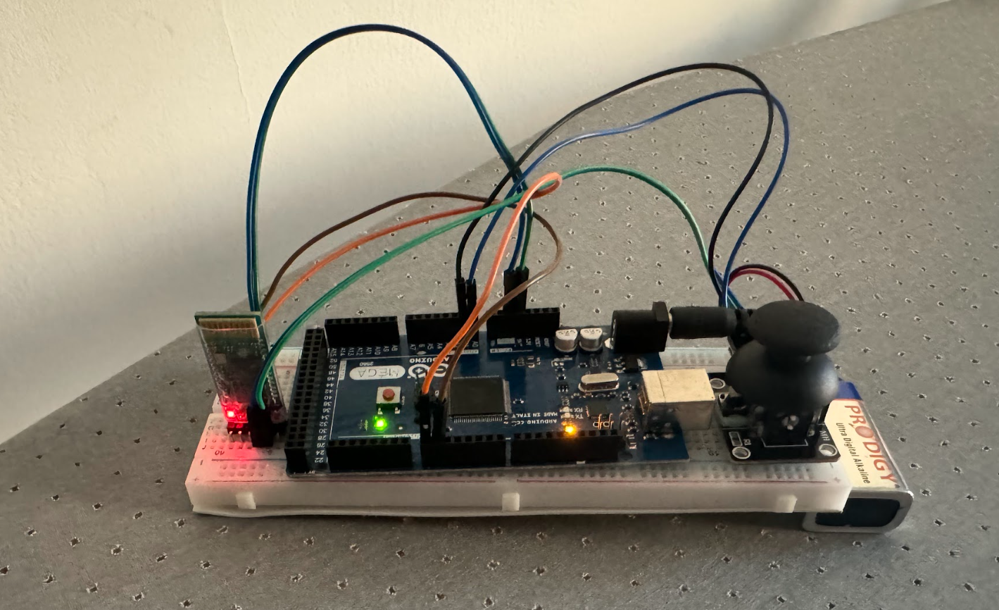

Projects
Selected builds spanning embedded control, mechanical automation, and wireless systems[cite: 1].

Bluetooth-Enabled Rover System
Designed a remotely operated omni-directional vehicle using Arduino wireless control[cite: 1]. Integrates a physical joystick remote configuration for highly responsive, stable real-time steering[cite: 1]. Focused heavily on maximizing system efficiency to ensure high operational battery life with minimal maintenance parameters[cite: 1].

Intelligent Automated Gate Design
An intelligent vehicle access control system integrating precise ultrasonic detection and servo-driven automation[cite: 1]. Features a custom 16x2 LCD UI tracking parking availability dynamically[cite: 1]. Designed as a robust, scalable, low-cost platform that successfully overcomes contrast, timing, and data synchronization hurdles[cite: 1].

EV3 - Elevator Shaft System
Multi-story cargo lift system originally designed on LEGO EV3[cite: 1]. Evolved into a premium industrial prototype by switching to an Arduino Uno architecture with custom UI telemetry tracking[cite: 1]. Features dual safety servo motors inside the shaft operating as active container security gates[cite: 1].
EV3 - Line Follower
Fully automated trajectory tracking robot engineered to navigate complex tracks with zero human intervention[cite: 1]. Utilizes fine-tuned infrared sensors combined with motor logic blocks to ensure high positional feedback accuracy during aggressive cornering[cite: 1].